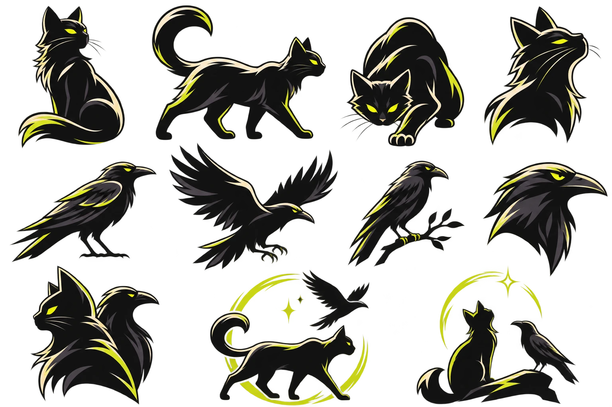

Caso de estudio / En construcción
RUVAK
Convertir inspiración dispersa en lugares que merece la pena explorar.
- Rol
- Definición de producto, UX/UI, identidad visual y personaje
- Tipo
- Proyecto propio
- Primera ciudad
- Gijón
- Estado
- Definición de producto y dirección visual · aún sin desarrollar ni validar
- Herramientas
- ChatGPT (imagen), Claude, Figma

§ 1Identidad visual
Un explorador que cambia de forma
Un gato y un grajo que se funden en un solo símbolo: el gato explora la ciudad a pie y el grajo, el viaje. Dirección urbana y editorial, con la fotografía como protagonista.

PersonajeGato y grajo en la misma familia de formas. 
SímboloGato y grajo en un solo símbolo.
Paleta
- Electric blue#2457D6Acciones e interacción
- Vivid orange#F06438Acentos editoriales
- Warm cream#F4F0E7Superficies cálidas
- Ink black#17191DEstructura y fondos
- Acid lime#C9D84BRasgo icónico
Proyecto en construcción: la identidad está definida; el producto aún no está desarrollado ni validado.
Estado